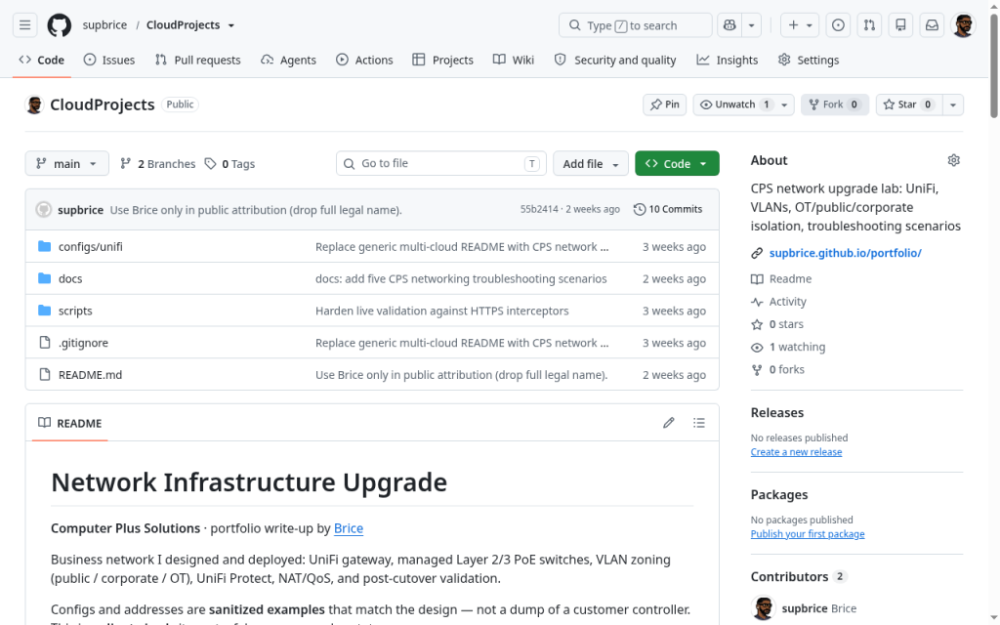
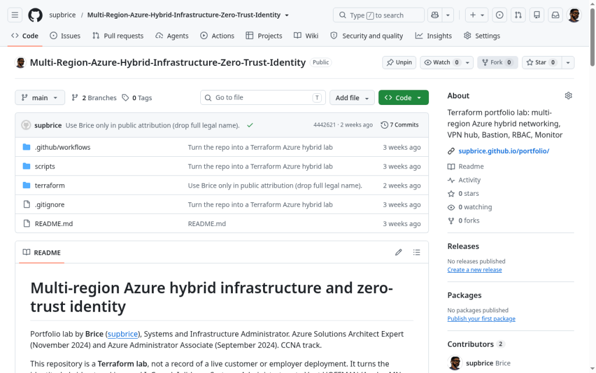
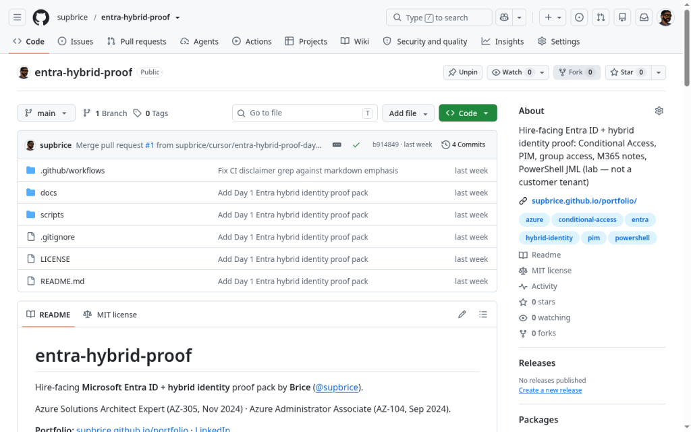

Systems Administration
Windows Server, Active Directory, identity, and hybrid infrastructure foundations.
Ngu Brice Che
Systems Administration · IT Operations · Technical Support · Networking
I build, support, and troubleshoot technology environments across systems, infrastructure, and networking, with experience in cloud, identity, and automation.
Core IT focus — concise and practical.
Windows Server, Active Directory, identity, and hybrid infrastructure foundations.
Reliable day-to-day operations, monitoring habits, and SLA-minded follow-through.
Tier-style troubleshooting that keeps people productive and systems stable.
Segmentation, connectivity patterns, and lab-built infrastructure design notes.
A few PORTFOLIO / LAB highlights — open Projects or Labs for the full set.

Segmented business network design with UniFi, VLANs, and OT isolation.

Terraform lab for multi-region Azure networking with hybrid connectivity and identity-minded access.

Entra ID + hybrid identity pack: Conditional Access, PIM, group access, and JML scripts.
A short overview — full roles and details are on About.
I’m an IT professional in Minnesota with a path through technical support, systems administration, workforce operations, and client support — including work at MTN Cameroon, nVent HOFFMAN, WTW, Foundever, and Roundel (Target).
That background built a foundation in Tier 2/3 support, identity and access, hybrid infrastructure, troubleshooting, and SLA-focused operations — with Azure, Entra ID / Active Directory, Terraform, PowerShell, and Python as supporting skills.
Creative and AI-assisted work that complements — not replaces — the IT focus.
Open to IT roles, technical projects, and lab collaboration.